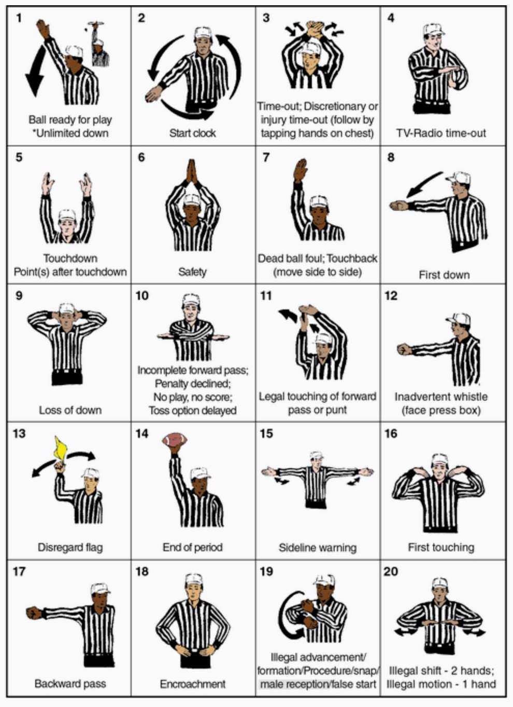

A dead ball foul occurs in the time interval in between downs. A down is over when the official blows his whistle to signify an incomplete catch, a runner being deflagged, a runner steppin out of bounds, and after a touchdown or try for extra point. The ball is dead until it is legally snapped.
The penalty for any dead ball foul, any non-player foul, and any unsportsmanlike foul is enforced from the succeeding spot (except for after a touchdown or try for extra point). If a dead ball foul occurs after time has expired for any period, the penalty is measured from the succeeding spot. The succeeding spot is where the ball would be snapped next.
Penalties for dead ball fouls are enforcd separately and in the order of occurrence, but they cannot be coupled with live ball fouls or other dead ball fouls to create double or multiple fouls. A 10 yard dead ball foul committed by one team will cancel a 10 yard dead ball fould committed by the other team. Any remaining 10 yard dead ball fouls will be enforced, and any 5 yard dead ball fouls will be enforced separately and in the order of occurence.
A live ball foul occurs during the down that is being played. There are two types of plays that can be in progress during a live ball: a loose ball play or a running play. The type of play is important once a foul occurs. When a foul occurs, the officials must know whether it was during a loose ball play or during a running play because that determines the spot of enforcement.
A ball is loose during a punt, a legal forward pass, a backward pass or fumble made by A from on or behind their line of scrimmage, and the run which precedes a legal pass, punt, or fumble. If a foul occurs during a loose ball play, then the basic enforcement spot is the previous spot.
However, if the penalty for the roughing the passer occurs on a completed forward pass, the enforcement spot is from the dead ball spot at the end of the run. The offensive team also recieves an automatic first down.
There are two types of running plays: behind the line of scrimmage and beyond the line of scrimmage. Behind the line, a running play is one that is not followed by a loose ball or a run that is followed by an illegal pass from behind the line. Beyond the line, a running play is one that includes any run. If a foul occurs during a running play the basic spot of enforcement is the spot where the run ends.
Penalty enforcements are based on the premise that a team is given the advantage of the distance that is gained without assistance of a foul. Therefore, all fouls but this one, which is a foul committed by the offense behind the basic spot, are penalized from the basic spot. This 1 foul is penalized from the spot of the foul.

| 5 yards | 10 yards | Loss of Down | Disqualification with 10 yards |
|---|---|---|---|
| Failure to Wear Required Player Equipment | Unsportsmanlike Conduct | Illegal Forward Pass | Illegally Secured Flag Belt |
| Delay of Game | Illegal Kick, Quick Punt | Illegal Backward Pass | Flagarant Unsportsmanlike Conduct |
| False Start | OPI or DPI | Intentional Grounding | Flagarant Personal Fouls |
| Encroachment | Personal Fouls | Illegal Male Reception | Intentionally Contacting an Official |
| Illegal Snap, Motion, Shift, Formation, Procedure, Advancement or Substitution | Flag Guarding | Nonplayer Deflagging or Interfering with a Runner | |
| Helping the Runner | Roughing the Passer (Automatic First Down) | Tackling the Runner |
A great way to learn the rules is by following THIS page for NIRSA Flag Football Officials.